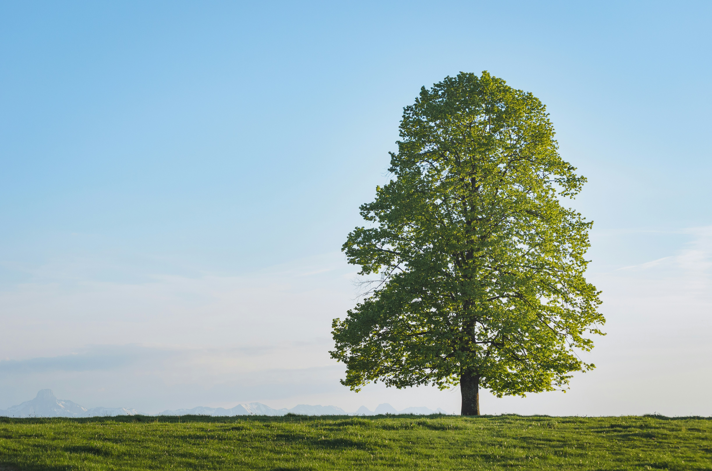

At EcoWise, our plan is to protect and save our home by exploring practical, everyday ways we can change our habits for the better. From reducing food waste and recycling smarter to reusing everyday materials, small actions can create a massive positive impact on our planet.

Learn how recycling everyday waste reduces landfill garbage, cuts down on pollution, and conserves valuable natural resources. By sorting materials like paper, plastic, and glass, we can protect local wildlife and keep our ecosystems clean and healthy.
Learn moreLearn how recycling everyday waste reduces landfill garbage, cuts down on pollution, and conserves valuable natural resources. By sorting materials like paper, plastic, and glass, we can protect local wildlife and keep our ecosystems clean and healthy.
Learn moreTest your knowledge on sustainability, recycling habits, and eco-friendly choices! Take our interactive quiz to see how well you understand SDG 12 and discover new ways you can live more sustainably every day.
Try quiz